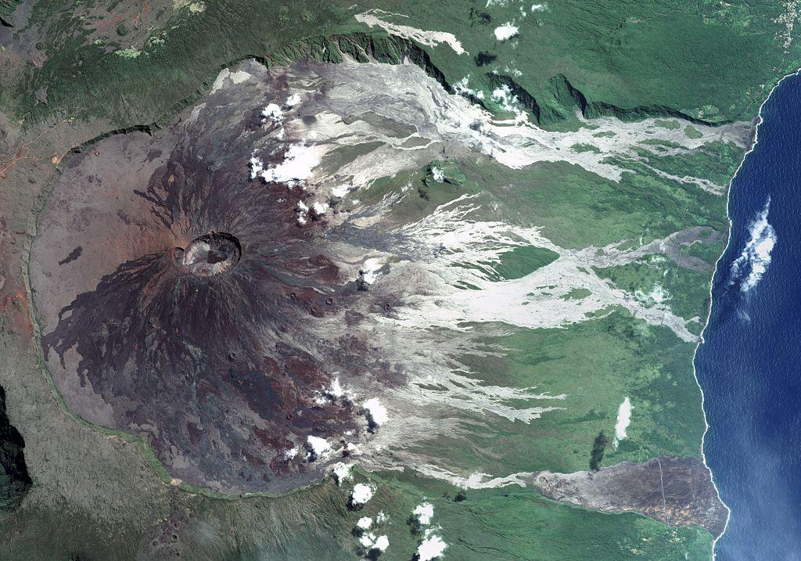

Projet
Nature
Accueil
Nature
Actualités
📍 Hauts-de-France
Actualités en France
Retrouvez ici les actualités du moment partout en France !
1. Le Volcan du Piton de la Fournaise

En effet,
le Volcan du Piton de la Fournaise est re-rentré en éruption ces temps-ci.
. Situé à l'Île de la Réunion, ce volcan qui constitue 40% du territoire de cette Île, il est l'un des volcan qui entre le plus en éruption dans la planète.
Ce volcan est aussi l'un des volcans les plus surveillé du monde par les volcanologues, mais également, il peut-être une attraction touristique. De plus, récemment, la lave du volcan a touché l'océan Indien.